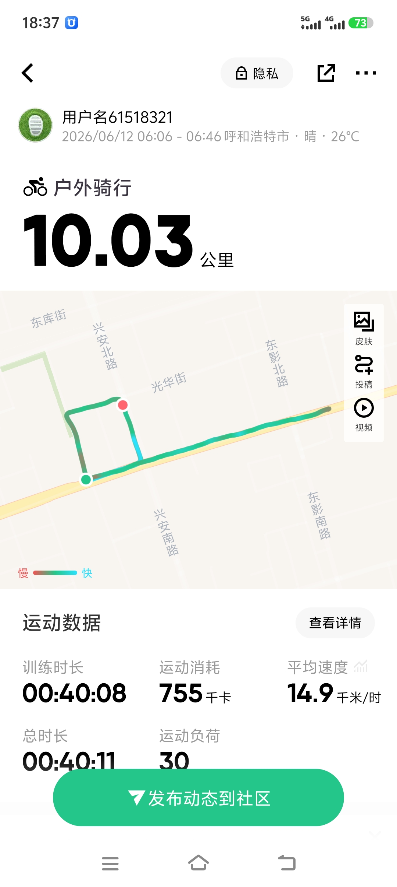

Keep｜呼和浩特市·10.03公里｜配速14.9千米/时｜消耗755千卡

清晨6点，当城市还在沉睡，我骑着单车踏上了这条熟悉的路线。阳光洒在东库街的树荫下，微风拂面，骑行的感觉总是那么畅快。今天的距离是10公里，虽然不算长，但每一步都让我感受到身体的律动和心跳的节奏。 骑行过程中，平均速度保持在14.9千米/时，步频稳定在30左右。虽然中途有些许疲惫，但想到即将到来的终点，还是咬牙坚持了下来。运动消耗了755千卡，汗水浸湿了衣衫，但那种成就感却让人无法抗拒。 这次骑行不仅是一次身体的锻炼，更是一次心灵的放松。在呼和浩特的街头巷尾，我感受到了这座城市的独特魅力。每一次踩踏板的动作，都是对自我的挑战和超越。骑行结束后，虽然有些疲惫，但内心却充满了满足感。 起跑前未充分热身，前2公里体感偏紧，之后逐渐打开。